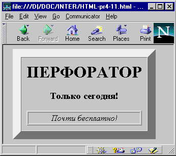
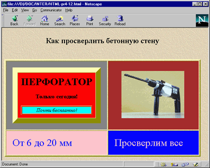

Приятное свойство таблиц состоит в том, что если вы захотите, то можете сделать их границы невидимыми. Это позволяет с помощью тага <ТАВLЕ> красиво размещать на странице текст и графику. До сих пор таг <ТАВLЕ> остается единственным мощным средством форматирования в HTML. Дизайнеры Web-страниц сейчас обладают практически такой же свободой использования <пустого пространства>, что и создатели печатных страниц. Таблицы в большей мере, чем что-либо другое, помогают отойти от иерархического размещения текста на Web-страницах.
Если броузер вообще поддерживает таблицы, он обычно правильно отображает наиболее интересные эффекты, полученные с помощью таблиц.
<HTML> <BODY> <CENTER> <TABLE CELLPADDING=10 CELLSPACING=0 BORDER=16> <TR> <TD ALIGN=CENTER> <H1>ПЕРФОРАТОР</H1> <H3>Только сегодня!</H3> <TABLE BORDER WIDTH=100%> <TR><TD ALIGN=CENTER><I>Почти бесплатно!</I></TD> </TR> </TABLE> </TD> </TR > </TABLE> </CENTER > </BODY> </HTML>

Рис. 1.21. Создание выпуклых элементов
Щелкните здесь, чтобы просмотреть пример 1.20 в браузере
Ведущие броузеры, позволяют отображать некоторые цвета. Есть несколько способов раскрасить таблицу, в основном они зависят от используемого броузера.
Вы не только можете окружить таблицу красивой рамкой, но еще и задать для нее цвет, отличный от цветов текста и фона. Создайте простой серый GIF (или любой GIF, который вы хотели бы иметь в качестве фона) и определите его в тэге <ВODY> как фон страницы. Затем задайте цвет фона страницы. В результате ваш тэг <ВОDY> будет выглядеть примерно так:
<BODY ВАСКGROUND="сооlbg.gif" ВGCOLOR=" # FF0000">
Вы создали двойной фон - GIF и заданный цвет. В результате фоновый цвет будет виден на всех границах таблиц и горизонтальных линиях (<НR>). Вне зависимости от того, является ли ваш фоновый GIF серым или нет, цветные линии и границы таблиц будут заметно выделяться. Если фоновый GIF не слишком сложно устроен, время загрузки страницы лишь немного возрастет. На приведенном ниже примере показано какие, широкие возможности дает использование цвета в HTML и в частности в таблицах.
<HTML> <BODY BGCOLOR="YELLOW" > <CENTER> <TABLE BORDER=3 CELLPADDING=20> <CAPTION ALIGN=TOP><H2>Как просверлить бетонную стену</H2></CAPTION> <TR> <TD BGCOLOR=GRAY> <TABLE CELLPADDING=10 CELLSPACING=0 BORDER=16> <TD BGCOLOR=RED ALIGN=CENTER> <H1>ПЕРФОРАТОР</H1> <H3>Только сегодня!</H3> <TABLE BORDER WIDTH=100%> <TR> <TD BGCOLOR=AQUA ALIGN=CENTER> <I>Почти бесплатно!</I></TD> </TR> </TABLE> </TABLE> <TD WIDTH=50% BGCOLOR=BROWN ALIGN=CENTER> <IMG SRC="bgr.gif" WIDTH=200 HEIGHT=150> </TD> </TR> <TR> <TD BGCOLOR=PINK> <FONT SIZE=6 COLOR=BLUE>От 6 до 20 мм</FONT> </TD> <TD BGCOLOR=BLUE> <FONT SIZE=6 COLOR=PINK>Просверлим все</FONT> </TD> </TR> </TABLE> </CENTER > </BODY> </HTML>

Рис. 1.22. Пример разноцветной таблицы
Щелкните здесь, чтобы просмотреть пример 1.21 в браузере
Назад | Содержание | Вперед